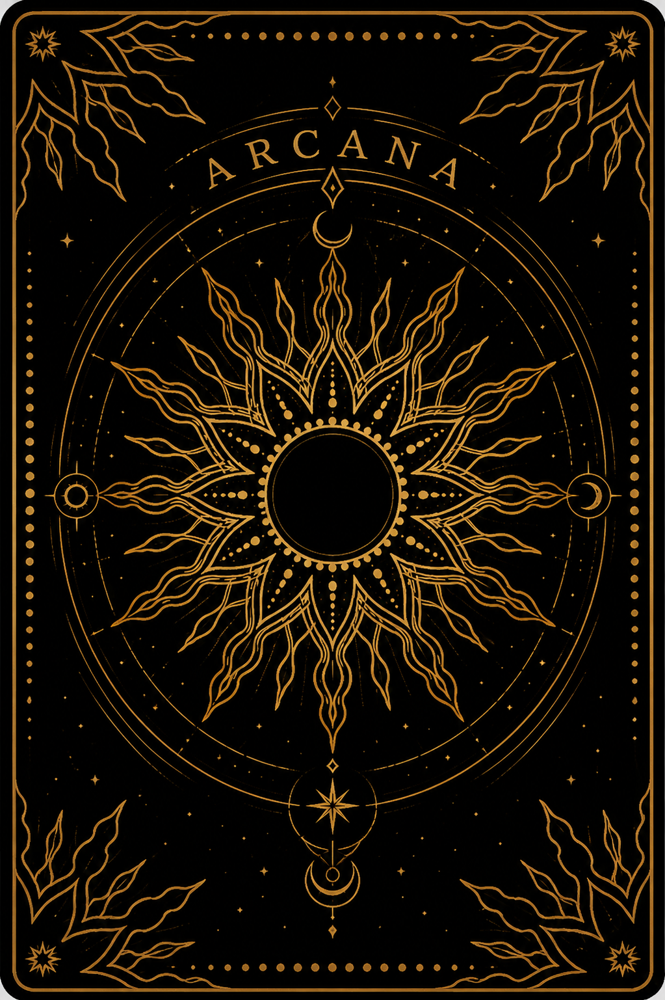

As vestimentas funcionam como a segunda pele da consciência. As cores e o tipo de roupa são o grau de proteção, a motivação interna e a natureza da ação de cada personagem. O manto é a personalidade social ou a camada espiritual que envolve o indivíduo. A túnica é a roupa que toca o corpo, os sentimentos e intenções mais íntimos. As pernas e pés são o movimento no mundo físico e como o indivíduo pisa na realidade.
Manto Azul: A sabedoria, a intuição e a devoção. É o manto da Sacerdotisa: ela está envolta nos mistérios do subconsciente.
Manto Vermelho: A paixão, a vontade e a ação. O manto do Imperador ou do Mago: sua autoridade é sustentada pelo fogo da vontade.
Manto Amarelo: A inteligência e a iluminação. Uma aura de clareza mental e otimismo.
Manto Verde: O equilíbrio, a cura e a natureza. É o manto da fertilidade e do crescimento orgânico.
Manto Cinza: A neutralidade, a renúncia e o anonimato. É o manto do Eremita, sugerindo que ele se despojou das cores do mundo para buscar a luz interna.
Manto Preto: O luto, o mistério ou o aprisionamento. Uma fase de profunda transformação ou peso material.
Manto Roxo: A realeza, o poder espiritual e a transmutação. A união do azul (espírito) com o vermelho (matéria): alta hierarquia esotérica.
Túnica Branca: A pureza, a castidade e a transparência. A alma da figura está limpa e suas intenções são nobres.
Túnica Vermelha: Uma natureza movida pelo Desejo e pela Força Vital.
Túnica Azul: Uma alma Serena, receptiva e Fiel.
Túnica Amarela ou Laranjada: A alegria, a criatividade e a energia solar. A túnica laranjada sugere um entusiasmo que beira o ímpeto físico.
Túnica Verde: A harmonia com os ciclos da vida e a esperança.
Roupas Estampadas: A complexidade e a multiplicidade.
Ausência de Roupas: A verdade nua e crua, a inocência e a liberdade. Sem vestes, a figura não tem nada a esconder e está em seu estado original.
Calças ou Calçados Vermelhos: Os passos do indivíduo são movidos pela Paixão e Urgência. O Cavaleiro de Paus, por exemplo, tem pernas "em chamas" de desejo por aventura.
Calças ou Calçados Amarelos ou Laranjados: Uma caminhada guiada pela Confiança e Entusiasmo.
Calças ou Calçados Verdes: Um progresso natural, calmo e sustentável.
Calças ou Calçados Brancos: Sugere uma jornada de pureza ou paz.
Calças ou Calçados Cinza: O cinza sugere uma caminhada prudente, porém desprovida de entusiasmo emocional.
Calças ou Calçados Azuis: Os passos guiados pela fé ou pela intuição.
Sapatos Diferentes: A dualidade ou a hesitação na forma de agir, sugerindo que o indivíduo está com um pé em cada situação.
Descalço: A humildade, a vulnerabilidade ou a conexão direta com a terra. Não há barreiras entre o indivíduo e a realidade.